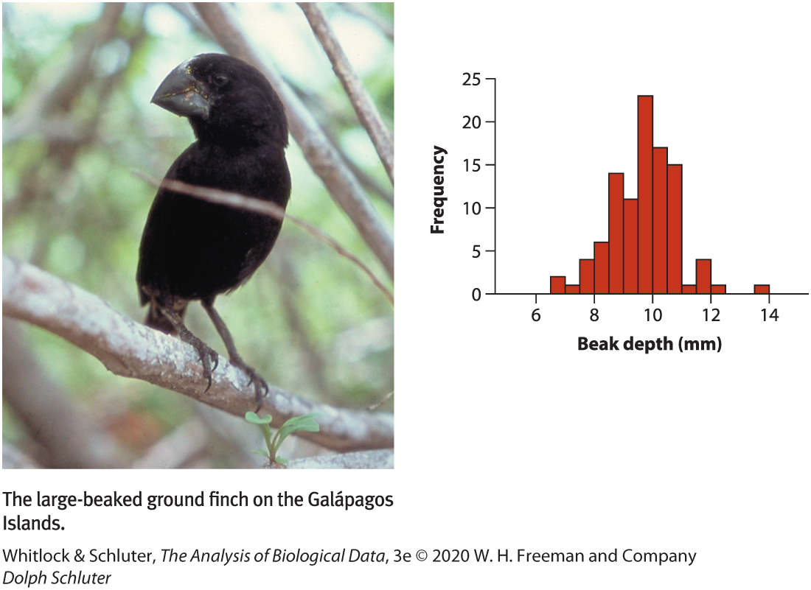
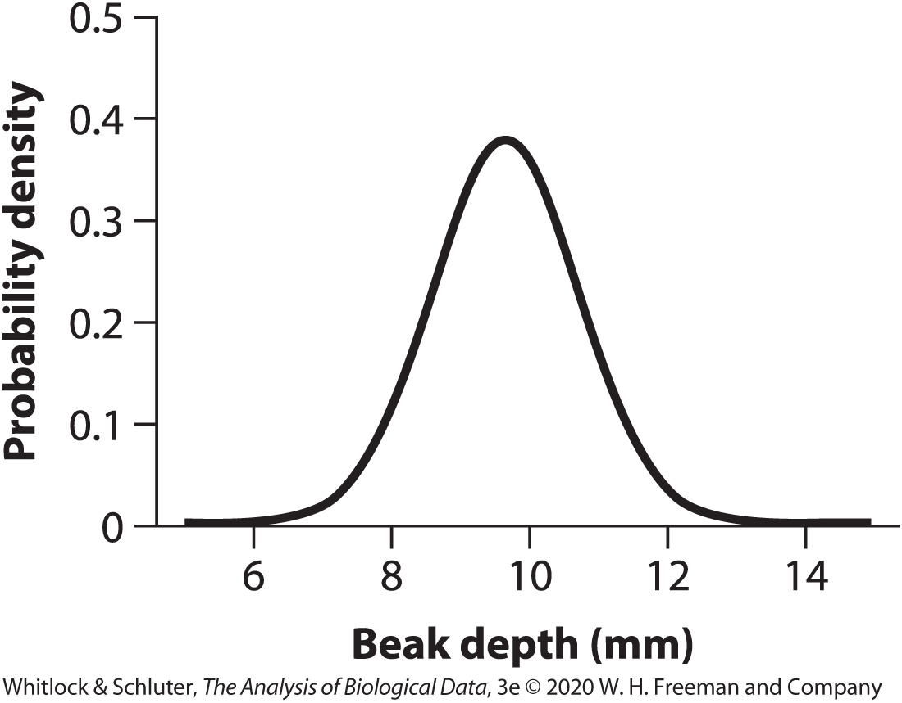

| convictions | frequency |
|---|---|
| 0 | 265 |
| 1 | 49 |
| 2 | 21 |
| 3 | 19 |
| 4 | 10 |
| 5 | 10 |
| 6 | 2 |
| 7 | 2 |
| 8 | 4 |
| 9 | 2 |
| 10 | 1 |
| 11 | 4 |
| 12 | 3 |
| 13 | 1 |
| 14 | 2 |
A frequency table. Data from Farrington (1994) and distributed at http://www.webapp.icpsr.umich.edu/cocoon/NACJD-STUDY/08488.xml.
Measures of central tendency and spread
2025-09-15
Frequency Distribution 
Probably Distribution 
Or summary statistics: quantities that capture important features of frequency distributions
Location (central tendency)
Width (spread)
Association (correlation)
Mean: The weight of your data. The average value.
Median: A “typical individual”. If I take an individual at random, this is the value we expect them to be closest to.
Mode: The typical individual most common value for an individual. The most likely answer for an individual selected at random.
“Average” is often used synonymously with mean.
But: medians and even modes are sometimes called an “average”.
When you see the word, “average”, pay attention to which measure of location it describes.
The sum of values divided by the sample size.
\[\bar{Y}=\frac{\sum_{i=1}^{n}Y_{i}}{n}\]
Example: The mean of the set of 11 numbers: \(1, 15,9, 16,6, 17, 10, 5, 12, 14, 13\) is
\(\bar{Y} = 1+15+9+16+6+17+10+5+12+14+13/11 = 106.1818\)
Frequency tables show the number of times, \(n_{i}\) a value, \(Y_{i}\), is observed in a sample of size \(n_{total}\)
We calculate the mean from a frequency table by summing the product of \(n_{i}\) and \(Y_{i}\) all values and diving by \(n_{total}\).
| convictions | frequency |
|---|---|
| 0 | 265 |
| 1 | 49 |
| 2 | 21 |
| 3 | 19 |
| 4 | 10 |
| 5 | 10 |
| 6 | 2 |
| 7 | 2 |
| 8 | 4 |
| 9 | 2 |
| 10 | 1 |
| 11 | 4 |
| 12 | 3 |
| 13 | 1 |
| 14 | 2 |
A frequency table. Data from Farrington (1994) and distributed at http://www.webapp.icpsr.umich.edu/cocoon/NACJD-STUDY/08488.xml.
| convictions | frequency | ConvictionxFreq |
|---|---|---|
| 0 | 265 | 0 |
| 1 | 49 | 49 |
| 2 | 21 | 42 |
| 3 | 19 | 57 |
| 4 | 10 | 40 |
| 5 | 10 | 50 |
| 6 | 2 | 12 |
| 7 | 2 | 14 |
| 8 | 4 | 32 |
| 9 | 2 | 18 |
| 10 | 1 | 10 |
| 11 | 4 | 44 |
| 12 | 3 | 36 |
| 13 | 1 | 13 |
| 14 | 2 | 28 |
The value halfway through an ordered list of observations.
Example: Using the same set of numbers as before (try):
[1] 10.72727[1] 10.72727[1] 12 [1] 1 5 6 9 10 12 13 14 15 16 17[1] 12From: makeameme.org
B21: Biostatistics with R